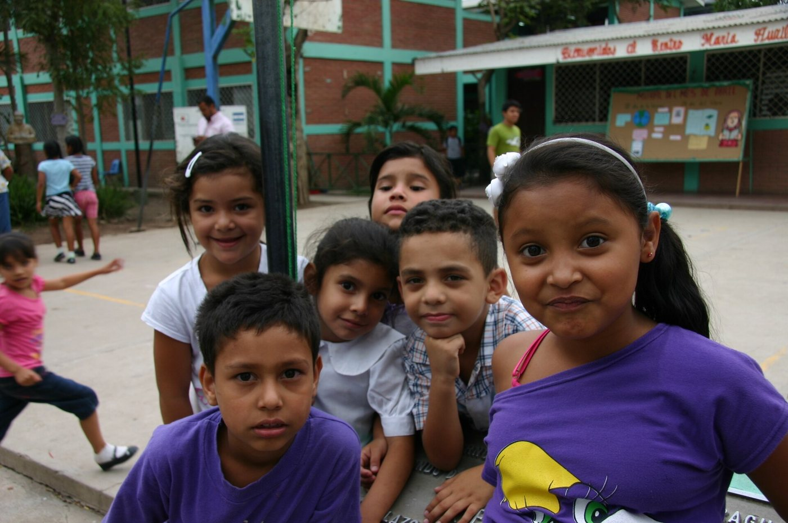

Educación
Formación, conocimientos y oportunidades educativas.
Detrás de cada aula hay un país en construcción: cada cuaderno que se abre, cada duda que se atreve a decir en voz alta y cada examen aprobado son un empujón más hacia el propio futuro. Estudiar sigue siendo una de las formas más seguras de elegir el camino que uno quiere recorrer.